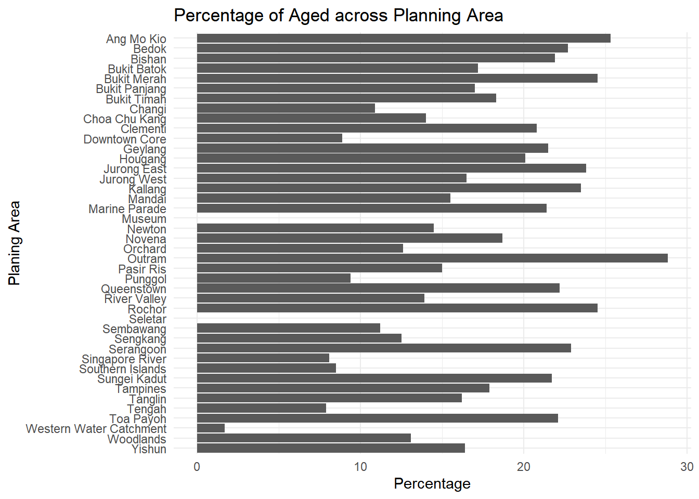
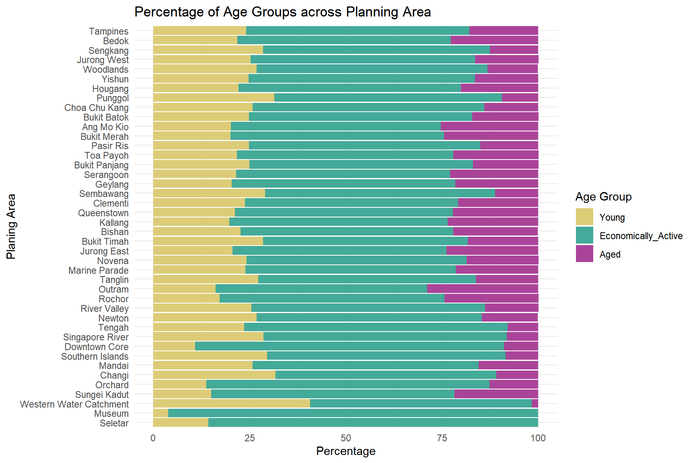
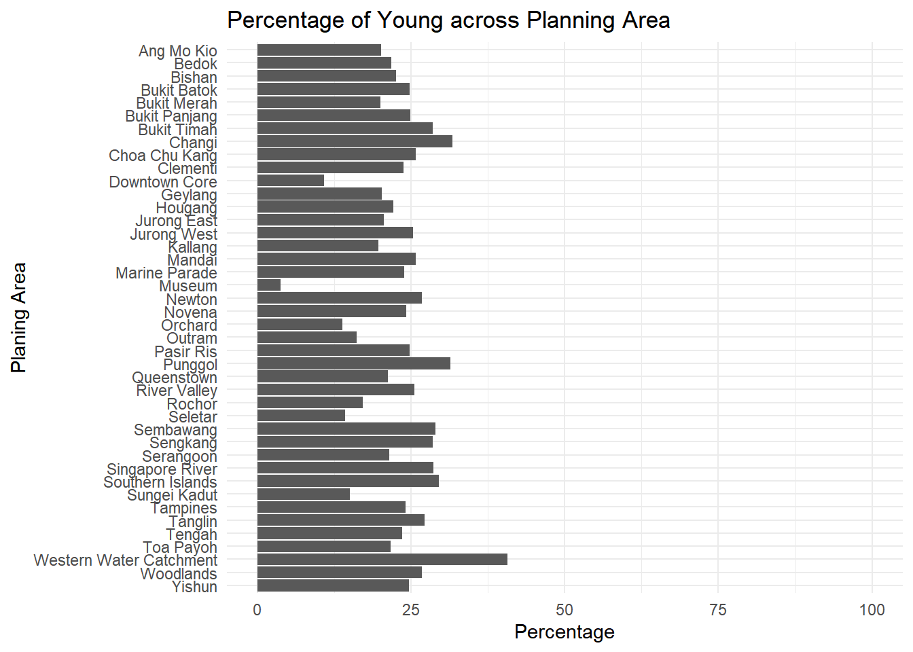
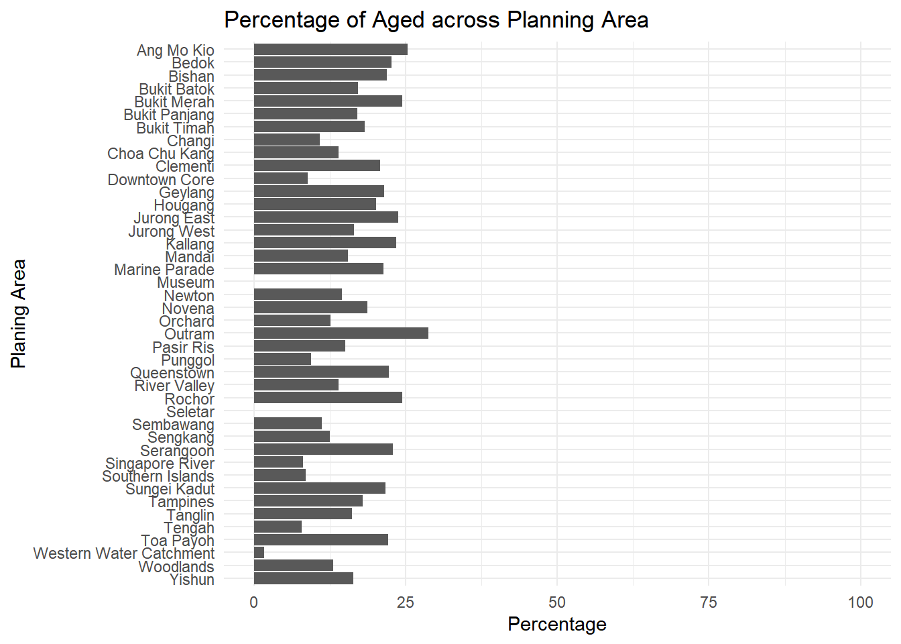
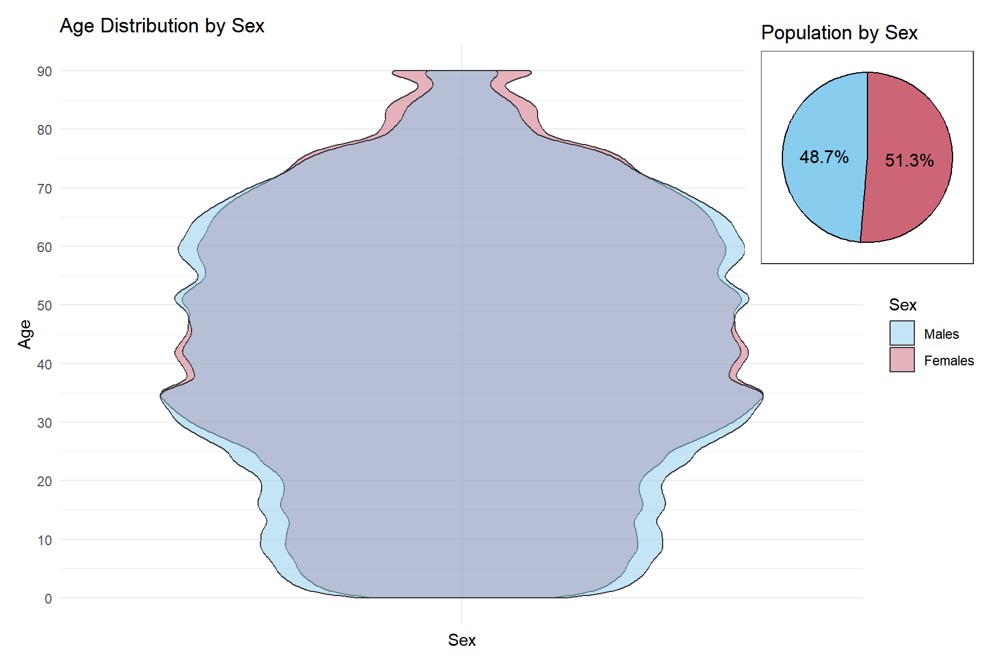

pacman::p_load(tidyverse, patchwork, ggthemes, knitr)Take-home_Ex01: Demographic Structures and Distribution of Singapore in 2024
1 Overview
1.1 Background
A local online media company that publishes daily content on digital platforms is planning to release an article on demographic structures and distribution of Singapore in 2024.
Assuming the role of the graphical editor of the media company, I am tasked to prepare at most three data visualisation for this article.
Tip
Creating enlightening and truthful data visualizations involves focusing on accuracy, transparency, and the ability to effectively communicate insights. It is about presenting data in a way that is both informative and aesthetically pleasing, ensuring the audience can grasp the information quickly and accurately.
The data should also be processed by using appropriate tidyverse family of packages and the data visualisation must be prepared using ggplot2 and its extensions. In addition, no interactive data visualisation are required.
1.2 Data Source
The data for this exercise is the Singapore Residents by Planning Area / Subzone, Single Year of Age and Sex, June 2024 dataset, retrieved by Department of Statistics, Singapore (DOS).
1.3 Install and Load the Required Libraries
In this exercise, besides tidyverse, four R packages will be used. They are:
- tidyverse: A collection of R packages designed for data science. It includes packages like dplyr, ggplot2, tidyr, and readr that simplify data wrangling and visualization.
- patchwork: An R package that allows users to easily combine multiple ggplot2 plots into a single composite layout, useful for comparative visual analysis.
- ggthemes: This package adds extra themes, scales, and geoms to ggplot2, making it easier to apply distinct themes to plots.
- knitr: A reporting package that integrates R code with markdown, enabling dynamic report generation in formats such as HTML, PDF, and Word, often used with R Markdown and Quarto.
Code chunk below will be used to check if these packages have been installed and also load them onto my working R environment.
1.4 Importing Data
For the purpose of this exercise, a data file called respopagesex2024 will be used. It consists of data about Singapore Residents by Planning Area / Subzone, categorised by a Single Year of Age and Sex,for June 2024. It is in a csv file format.
The code chunk below imports respopagesex2024.csv into R environment by using read_csv() function of readr package (under tidyverse).
sg_data <- read_csv("data/respopagesex2024.csv")2 Exploratory Data Analysis (EDA)
There are a total of six attributes in the sg_data tibble data frame. Four of them are categorical data type and the other two are in continuous data type.
Categorical Variables
- PA: Planning Area
- SZ: Subzone
- Age: Single Year of Age
- Sex
Continuous Variables
- Pop: Resident Count
- Time: Time / Period
The first 10 rows of the data are displayed using kable (under knitr) to get a basic understanding of the data.
| PA | SZ | Age | Sex | Pop | Time |
|---|---|---|---|---|---|
| Ang Mo Kio | Ang Mo Kio Town Centre | 0 | Males | 10 | 2024 |
| Ang Mo Kio | Ang Mo Kio Town Centre | 0 | Females | 10 | 2024 |
| Ang Mo Kio | Ang Mo Kio Town Centre | 1 | Males | 10 | 2024 |
| Ang Mo Kio | Ang Mo Kio Town Centre | 1 | Females | 10 | 2024 |
| Ang Mo Kio | Ang Mo Kio Town Centre | 2 | Males | 10 | 2024 |
| Ang Mo Kio | Ang Mo Kio Town Centre | 2 | Females | 10 | 2024 |
| Ang Mo Kio | Ang Mo Kio Town Centre | 3 | Males | 10 | 2024 |
| Ang Mo Kio | Ang Mo Kio Town Centre | 3 | Females | 10 | 2024 |
| Ang Mo Kio | Ang Mo Kio Town Centre | 4 | Males | 30 | 2024 |
| Ang Mo Kio | Ang Mo Kio Town Centre | 4 | Females | 10 | 2024 |
2.1 Checking for duplicates
Before proceeding further with the EDA, a check for duplicated records was done using group_by_all() and filtering rows with more than 1 count. The results of the code below confirms that there were no duplicated records.
2.2 Fixing Age Column Inconsisency
Although there are no duplicated records, the earlier EDA of variable types and the data table revealed that the Age column, which appears to be a continuous variable, was incorrectly recognised as a categorical variable.
Upon further analysis of the Age column using the code below, it was found to contain 91 unique values. These values range from 0 to 89 and are numeric in nature, but the last value is a string, “90_and_Over”. This string caused the Age column to be recognised as a categorical variable instead of a continuous one.
To address this issue, the code below converts the string “90_and_Over” into the numerical value 90, and subsequently ensures that the Age column is treated as a numeric variable.
2.3 Binning Age Column
Even after fixing the inconsistent data type in the Age column, there were still 91 unique values, which will be too many for meaningful analysis. Therefore, the Age column will be binned into the following categorise using the code below:
- Young: Singapore residents aged 0 to 24
- Economically_Active: Singapore residents aged 25 to 64
- Aged: Singapore residents aged 65 and above
After completing the data manipulation steps described in earlier, the resulting data is shown in the table below.
| PA | SZ | Age | Sex | Pop | Time | Age_Group |
|---|---|---|---|---|---|---|
| Ang Mo Kio | Ang Mo Kio Town Centre | 0 | Males | 10 | 2024 | Young |
| Ang Mo Kio | Ang Mo Kio Town Centre | 0 | Females | 10 | 2024 | Young |
| Ang Mo Kio | Ang Mo Kio Town Centre | 1 | Males | 10 | 2024 | Young |
| Ang Mo Kio | Ang Mo Kio Town Centre | 1 | Females | 10 | 2024 | Young |
| Ang Mo Kio | Ang Mo Kio Town Centre | 2 | Males | 10 | 2024 | Young |
| Ang Mo Kio | Ang Mo Kio Town Centre | 2 | Females | 10 | 2024 | Young |
| Ang Mo Kio | Ang Mo Kio Town Centre | 3 | Males | 10 | 2024 | Young |
| Ang Mo Kio | Ang Mo Kio Town Centre | 3 | Females | 10 | 2024 | Young |
| Ang Mo Kio | Ang Mo Kio Town Centre | 4 | Males | 30 | 2024 | Young |
| Ang Mo Kio | Ang Mo Kio Town Centre | 4 | Females | 10 | 2024 | Young |
3 Visualisations
3.1 Population Across Planning Areas by Sex
This section examines the distribution of the Population across Planning Areas, categorized by Sex, to understand demographic patterns in different regions.
3.1.1 Feature Engineering
In this step, the following features were added to support the visual analysis:
- The dataset sg_data was grouped by Planning Area (PA) and Sex to calculate the Population (Pop) for each subgroup using summarise(Pop = sum(Pop)).
- A second grouping by PA was performed to calculate the Total population per PA, stored in a new column Total.
- Rows with a Total population of 0 were removed using filter(Total > 0) to eliminate empty PA from the analysis.
- The resulting data structure, demography_sex, now contains the Total population broken down by Sex and PA, along with overall population Total per PA.
The code below performs the transformation necessary in preparation for analysis and comparing population distribution between Males and Females across different PAs.
3.1.1 Plots and Analysis
The aim is to create a detailed view of Population distribution by Sex across Singapore’s Planning Areas. These were the steps taken to create a stacked horizontal bar chart for visualisation:
- The PA was ordered by ascending Total population using the pa_order vector. Although the factor levels were in ascending, the use of coord_flip() in the plot reverses the axis orientation, resunting in a horizontal bar chart that appears in the descending order for Totals.
- Similar to the reason above, the Sex variable is converted into a factor with levels set as Females first, followed by Males, such that it will appear as Males followed by Females horizontal bar chart.
- ggplot() was used with geom_bar() (with stat = “identity” and position = “stack”) to create a stacked horizontal bar chart (s1), displaying the Pop by Sex across PA.
- theme_minimal() was applied for a clean visual style, and labs()/ggtitle() were used to customize axis labels and the plot title.
- scale_fill_manual() was used to assign distinct colors to Males and Females and to control the legend order, explicitly setting it as: Males, Femals instead of the reversed order if left as default.
- scale_y_continuous(labels = scales::comma) was used to show numerical numbers rather than the scientific notation.
- A zoomed-in plot (s2) shows the bottom 10 PA and was embedded into the main plot using inset_element() (under patchwork). This method makes it easier to examine less populous PA in the same figure.
- Since the zoomed-in plot (s2) was overlaid on top of the main chart (s1), theme_test() was used to provide a contrast with the background plot (s1).

pa_order <- demography_sex %>%
distinct(PA, Total) %>%
arrange(Total) %>%
pull(PA)
demography_sex <- demography_sex %>%
mutate(
PA = factor(PA, levels = pa_order),
Sex = factor(Sex, levels = c("Females", "Males"))
)
s1 <- ggplot(data = demography_sex,
aes(x = PA, y = Pop, fill = Sex)) +
geom_bar(stat = "identity", position = "stack") +
coord_flip() +
theme_minimal() +
labs(
x = "Planing Area",
y = "Population",
fill = "Sex"
) +
ggtitle("Population Across Planning Areas by Sex") +
scale_fill_manual(
values = c(
"Males" = "#88CCEE",
"Females" = "#CC6677"
),
breaks = c("Males", "Females")
) +
scale_y_continuous(labels = scales::comma)
demography_sex_bottom10 <- demography_sex %>%
filter(PA %in% head(pa_order, 10))
s2 <- ggplot(data = demography_sex_bottom10,
aes(x = PA, y = Pop, fill = Sex)) +
geom_bar(stat = "identity", position = "stack") +
coord_flip() +
theme_test() +
labs(
x = NULL,
y = NULL
) +
scale_fill_manual(
values = c(
"Males" = "#88CCEE",
"Females" = "#CC6677"
),
breaks = c("Males", "Females")
) +
theme(
legend.position = "none",
)
s1 + inset_element(s2,
left = 0.2,
bottom = 0.05,
right = 1,
top = 0.35)Most Populated
- Tampines
- Bedok
- Sengkang
- Jurong West
- Woodlands
Least Populated
- Seletar
- Museum
- Western Water Catchment
- Sungei Kadut
- Orchard
Insights
Gender Ratio
- The gender distribution is generally balanced across all PAs.
Residential Areas
- The most populated PAs consists of a mix of mature estates (e.g., Tampines, Bedok) and newer estates (e.g, Sengkang, Jurong West, Woodlands) (Refer to Section 5 Appendix: Singapore’s Estate Classification)
- This reflects Singapore’s government direction and success in transforming newer towns or underutilised land into well-developed residential hubs comparable to mature estates.
Commercial / Industrial /Military Areas
- The least populated PAs are primarily non-residential zones
- Commercial: Mueseum, Orchard
- Industrial: Sungei Kadut
- Military/Nature: Seletar (air base), Western Water Catchment
3.2 Percentage of Age Groups Across Planning Areas
This visualisation aims to show the percentage distribution of Age Groups (Young, Economically_Active and Aged) across Planning Areas. This will provide insights into how Singapore residents are demographically distributed across Singapore.
3.2.1 Feature Engineering
In this step, the following features were created to support the visual analysis:
- The dataset sg_data was grouped by PA and Age_Group to calculate the Population (Pop) for each subgroup using summarise(Pop = sum(Pop)).
- A second grouping by PA was performed to compute the Total population per PA, stored in a new column Total using mutate(Total = sum(Pop)).
- Rows with a Total population of 0 were removed using filter(Total > 0) to eliminate empty PA from the analysis.
- The data was then transformed to compute percentage composition of each Age Group within each PA using mutate(Pct_Age_Group = (Pop / Total) * 100).
- Percentages of Age Group were rounded to 1 decimal place using mutate(across(Pct_Age_Group, ~ round(.x, 1))).
The code below transforms the data and results in the final output pct_demography_age. It contains the percentage of Age Group (Young, Economically Active) for each PA.
3.2.2 Plots and Analysis
To visualize the distribution of age groups across planning areas, the following plotting steps were performed:
- The PA follows the same order as the Section 3.1: Population Across Planning Areas by Sex plot above to provide easy comparisons between them.
- The Age_Group variable was explicitly ordered as Aged → Economically Active → Young so that the stacked bars chart will be in the reversed order after coord_flip().
- The rest of the functions have been explained in the Section 3.1: Population Across Planning Areas by Sex plot above.

pct_demography_age <- pct_demography_age %>%
mutate(PA = factor(PA, levels = pa_order),
Age_Group = factor(Age_Group, levels = c("Aged", "Economically_Active", "Young")))
ggplot(data = pct_demography_age,
aes(x = PA, y = Pct_Age_Group, fill = Age_Group)) +
geom_bar(stat = "identity", position = "stack") +
coord_flip() +
theme_minimal() +
labs(
x = "Planing Area",
y = "Percentage",
fill = "Age Group"
) +
ggtitle("Percentage of Age Groups across Planning Area") +
scale_fill_manual(
values = c(
"Young" = "#DDCC77",
"Economically_Active" = "#44AA99",
"Aged" = "#AA4499"
),
breaks = c("Young", "Economically_Active", "Aged")
)Economically Active Population (Working Age 25 to 64)
- Extremely high proportions of working-age residents:
- Museum
- Downtown Core
- Orchard
- Low proportions of Young and Aged population
- Museum and Seletar have no recorded Aged population
Young Population (Aged 0 to 24)
- Highest concentrations of Young:
- Punggol
- Sembawang
- Sengkang
- Higher concentrations of Economically Active and lower proportions of Aged
Aged Population (Aged 65 and above)
- Highest concentration of Aged:
- Ang Mo Kio
- Bukit Merah
- Kallang
Insights
Central districts (e.g., Museum, Downtown Core, Orchard):
- Have a high proportion of Economically Active residents, with relatively low concentration of Youth and Aged.
- These are business or commercial hubs.
Mature estates (e.g., Ang Mo Kio, Bukit Merah, Kallang):
- Show a more balanced demographic distribution, though with a noticeably ageing population.
New estates (e.g., Punggol, Sembawang, Sengkang):
- Skew heavily toward the Young and Economically Active, with fewer Aged residents.
- This reflects their appeal to new families, likely due to the availability and price of new housing developments.
3.2.3 Workings - Plots created before Improving to the Final Version Above
Reflections
I initially considered using tabs to view the graphs separately, but later realised that by restructuring the data, all three graphs could be combined into a single stacked bar chart. This thought led to the final plot presented above.
Feature Engineering
Plots and Reflections



pct_demography$PA <- factor(pct_demography$PA, levels = rev(sort(unique(pct_demography$PA))))
ggplot(data = pct_demography,
aes(x = PA, y = Pct_Young)) +
geom_bar(stat = "identity") +
coord_flip() +
theme_minimal() +
labs(
x = "Planing Area", # Set a custom x-axis title
y = "Percentage" # Set a custom y-axis title
) +
ggtitle("Percentage of Young across Planning Area") +
scale_y_continuous(limits = c(0, 100))3.3 Age Distribution by Sex
3.3.1 Feature Engineering
The first part of the code aggregates the Population dataset by Sex, and calculates the percentage of Males and Females by dividing it by the Total. - In preparation for adding labels to the pie chart, their position (ypos) was calculated using cumulative percentages since coord_polar(“y”) will be used to create the pie chart.
In next part, the dataset was prepared to visualize Age distributions by Sex:
- The dataset sg_data was grouped by Age and Sex, then summarized using sum(Pop) to get the population count for each Age-Sex group.
- The resulting grouped data demography_sex_age was expanded into individual-level observations using uncount(weights = Pop).
- This transformation duplicates each row according to the population count, effectively simulating individual records. This is a requirement for plotting accurate violin plots of distributions.
The code below performs the steps above and finally splits the demography_sex_age data into two subsets (Males and Females) to allow overlaying their respective violin plots for easier visual comparison.
3.3.2 Plots and Analysis
To create an overlay violin plot (p1) comparing Age distributions between Males and Females:
- A ggplot() object was initialized to serve as the base plot that the violin plots will be overlaid on.
- geom_violin() was used twice, once for each sex, with shared x-axis “All” to overlay both distributions.
- alpha = 0.5 was set to add transparency, allowing both violins to be visible when they overlap.
- scale = “area” ensures the violins are scaled proportionally to the size of their age groups.
- A custom fill colour was set for each sex using scale_fill_manual(), and breaks = c(“Males”, “Females”) ensures the legend appears with Males being first.
- theme(axis.text.x = element_blank()) hides the x-axis label since both violins are plotted at a shared position “All”.
The pie chart (p2) is created similarly to the bar charts in the previous sections but with the following modifications:
- Using coord_polar(“y”) to convert it into a pie chart by transforming the y-axis into a circular layout.
- Data labels were added using geom_text()
- Axis titles, legend and tick marks were removed using labs() and theme().
Lastly, the pie chart (p2) is overlaied over the violin plot (p2) using inset_element() to provide an easy overview of the necessary data.

p1 <- ggplot() +
geom_violin(data = demography_females,
aes(x = "All", y = Age, fill = "Females"),
scale = "area", alpha = 0.5) +
geom_violin(data = demography_males,
aes(x = "All", y = Age, fill = "Males"),
scale = "area", alpha = 0.5) +
theme_minimal() +
labs(
x = "Sex",
y = "Age",
title = "Age Distribution by Sex"
) +
scale_fill_manual(
name = "Sex",
values = c(
"Males" = "#88CCEE",
"Females" = "#CC6677"),
breaks = c("Males", "Females")
) +
theme(axis.text.x = element_blank())
p2 <- ggplot(pct_total_by_sex, aes(x = "", y = Pct_Sex, fill = Sex)) +
geom_bar(stat = "identity", color = "black") +
coord_polar("y") +
theme_test() +
labs(title = "Population by Sex") +
scale_fill_manual(
values = c("Males" = "#88CCEE", "Females" = "#CC6677")
) +
labs(
x = NULL,
y = NULL
) +
geom_text(aes(y = ypos, label = label), color = "black", size = 4) +
theme(
legend.position = "none",
panel.grid.major = element_blank(),
panel.grid.minor= element_blank(),
axis.text.x = element_blank(),
axis.ticks = element_blank()
)
p1 + inset_element(p2,
left = .7,
bottom = 0.6,
right = 1.3,
top = 1.05)
Insights
Gender Ratio
- The Female population is slightly higher than the Male population overall.
- This aligns with Singapore’s national demographic pattern, where Females outnumber Males slightly due to longer life expectancy.
Population Trends (Age 0 - 35)
- Population rises gradual from birth to age 8.
- A plateau is observed from ages 9 to 20, followed by another increase towards a population peak at age 35.
- Males consistently outnumber Females slightly in this range.
Population Trends (Age 36 - 60)
- The segment holds the largest proportion of Singapore’s population.
- Gender distribution is balanced.
Population Trends (Age Above 60)
- A steady decline beings from age 60 onward.
- The Male population decreases at a faster rate, leading to a widening gender gap with increasing age.
Population Pyramid
- The age distribution resembles that of an ageing population which consistent with other developed countries.
3.3.3 Workings - Plots created before Improving to the Final Version Above
Reflections
I initially avoided expanding the data into individual-level observations using uncount(weights = Pop), since it is possible to pass weights = Pop in aes(). However, the resulting violin plot look weird. Therefore, I tried the uncount() method and found that the 2 methods produces very different plots. Upon further research, I found that while geom_violin() can estimate the probability density function (PDF) using the weights, density estimation with weights may be less precise or behave unexpectedly depending on implementation. Therefore, I chose to use uncount() above, as working with raw, individual-level distributions seems to produce more accurate and visually realistic results.
Feature Engineering
Plots and Reflections

ggplot(data=demography_sex_age_2,
aes(y = Age,
x= Sex,
weight = Pop,
fill = Sex)) +
geom_violin(scale = "area") +
theme_minimal() +
labs(
x = "Sex",
y = "Age",
title = "Age Distribution by Sex"
) +
scale_fill_manual(
values = c(
"Males" = "#88CCEE",
"Females" = "#CC6677")
)4 Summary
Singapore, being land-scarce, has designated different areas for specific purposes. Least populated zones tend to be commercial, industrial, or military, such as central districts which, while less residential, tend to have a higher concentration of working-age adults. In contrast, the most populated areas comprise both mature and newer estates, reflecting the government’s successful urban development. Newer estates are skewed toward younger and economically active residents, attracting young families, while mature estates have a larger proportion of aged residents. Like most developed countries, Singapore has an ageing demographic, with the population peaking around age 35 and the 35–60 age group forming the largest segment. From this point onward, the population declines, and females begin to outnumber males in the older age groups due to longer life expectancy. As a result, Singapore’s overall population has slightly more females, though the younger age groups maintain a roughly equal gender distribution.
5 Appendix
5.1 Singapore’s Estate Classification

Reference: https://www.hdb.gov.sg/-/media/doc/SCEG/20082023-Annexes/Annex-A1.ashx